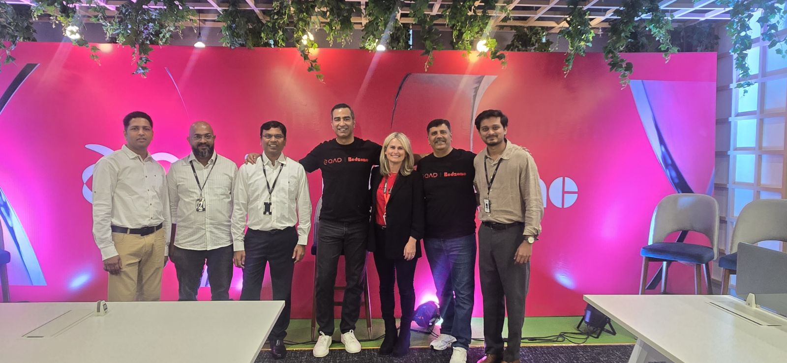

SaaS & ERP

GoComet
Hypergrowth supply chain SaaS. Customer onboarding, enterprise firefighting, retention, transformation programs, implementation governance.

QAD
ERP modernization, enterprise transformation, stakeholder management, operational adoption, AI workflow thinking.